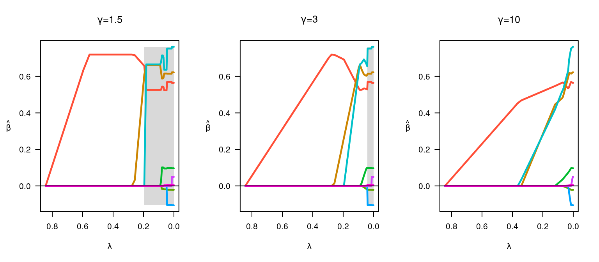
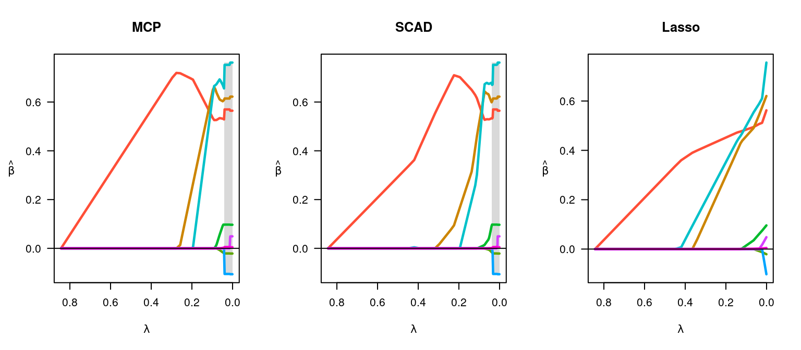
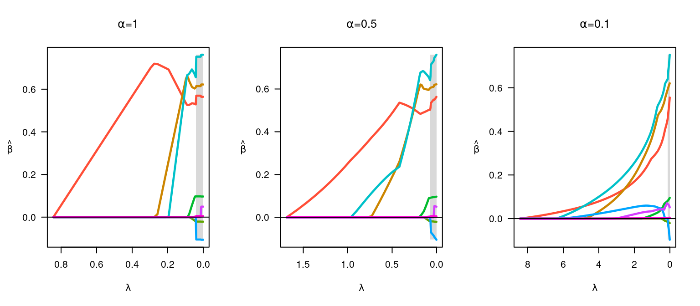

ncvreg fits models that fall into the penalized
likelihood framework. Rather than estimating $\bb$ by maximizing the likelihood, in this
framework we estimate $\bb$ by
minimizing the objective function
$$ Q(\bb|\X, \y) = L(\bb|\X,\y)+ P_\lam(\bb), $$
where $L(\bb|\X,\y)$ is the loss
(deviance) and $P_\lam(\bb)$ is the
penalty. This article describes the different penalties available in
ncvreg; see models for more
information on the different loss functions available. Throughout,
linear regression and the Prostate data set is used
data(Prostate)
X <- Prostate$X
y <- Prostate$yMCP
This is the default penalty in ncvreg.
EQUATION HERE.
PICTURE OF PENALTY.
The following figure illustrates the effect of changing :
par(mfrow=c(1,3))
fit <- ncvreg(X, y, gamma=1.5)
plot(fit, main=expression(paste(gamma,"=",1.5)))
fit <- ncvreg(X, y)
plot(fit, main=expression(paste(gamma,"=",3)))
fit <- ncvreg(X, y, gamma=10)
plot(fit, main=expression(paste(gamma,"=",10)))
At smaller values, the estimates transition rapidly from 0 to their unpenalized solutions; this transition happens more slowly and gradually at larger values. Note that one consquence of these rapid transitions at low values is that the solutions are less stable (the gray region depicting the region of the solution path that is not locally convex is larger).
Lasso
EQUATION HERE.
PICTURE OF PENALTY.
par(mfrow=c(1,3))
fit <- ncvreg(X, y)
plot(fit, main="MCP")
fit <- ncvreg(X, y, penalty="SCAD")
plot(fit, main="SCAD")
fit <- ncvreg(X, y, penalty="lasso")
plot(fit, main="Lasso")
Elastic Net and MNet
EQUATION HERE.
par(mfrow=c(1,3))
fit <- ncvreg(X, y)
plot(fit, main=expression(paste(alpha,"=",1)))
fit <- ncvreg(X, y, alpha=0.5)
plot(fit, main=expression(paste(alpha,"=",0.5)))
fit <- ncvreg(X, y, alpha=0.1)
plot(fit, main=expression(paste(alpha,"=",0.1)))
MENTION ELASTIC NET